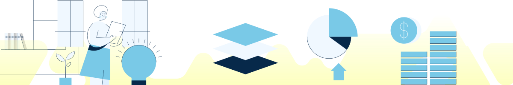
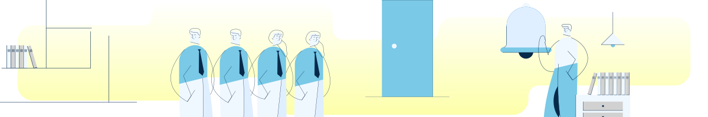

Mengenal Konsep Utang
Memahami konsep utang penting bagi setiap orang, terutama calon pekerja migran yang mungkin dihadapkan pada kebutuhan mendesak saat bekerja di luar negeri. Utang, pada dasarnya, adalah pinjaman yang harus dikembalikan dalam bentuk uang atau benda lainnya. Konsep ini perlu dikenali, namun tidak boleh terlalu "akrab" karena utang bisa menjadi beban finansial jika tidak dikelola dengan baik. Ingatlah, setiap utang adalah tanggung jawab yang harus dilunasi tepat waktu.
Orang berhutang biasanya karena beberapa alasan. Ada yang terpaksa berhutang untuk memenuhi kebutuhan mendesak, seperti biaya kesehatan atau kebutuhan hidup sehari-hari. Sebagian lainnya mungkin terdorong oleh keinginan yang sulit dikendalikan, seperti membeli rumah atau gadget baru. Beberapa individu juga berhutang karena pendapatan yang terbatas atau untuk modal usaha. Namun, penting untuk tetap bijak dalam berutang dan memastikan kemampuan membayar kembali agar tidak menjadi beban di masa depan.
Mengenal Konsep Berutang
- Mari berkenalan dengan konsep berhutang, tapi jangan terlalu akrab.
- Utang merupakan pinjaman yang dilakukan oleh seseorang kepada orang lain baik berupa uang atau pun benda berharga lainnya.
- Ingat, PINJAMAN artinya harus dikembalikan!
Mengapa Kita Ber-Hutang?
- Kebutuhan mendesak
- Keinginan yang tidak bisa dikendalikan seperti ingin membeli rumah atau gadget baru
- Pendapatan kecil
- Mau memulai bisnis
Utang Baik dan Utang Buruk
Tidak semua utang itu buruk, ada juga jenis utang yang bisa memberikan manfaat positif. Utang baik adalah utang yang diambil untuk kebutuhan produktif yang dapat menghasilkan nilai lebih di masa depan. Contohnya, utang untuk modal usaha atau investasi pendidikan. Jenis utang ini dianggap baik karena memiliki potensi untuk memberikan pengembalian atau manfaat jangka panjang, seperti meningkatkan penghasilan atau meningkatkan keterampilan.
Di sisi lain, ada utang buruk yang sebaiknya dihindari. Utang buruk biasanya diambil hanya untuk memenuhi keinginan konsumtif tanpa ada manfaat yang nyata atau jangka panjang. Misalnya, berutang untuk membeli barang-barang yang tidak terlalu dibutuhkan atau untuk gaya hidup mewah. Utang jenis ini cenderung membawa beban keuangan yang tidak menghasilkan keuntungan dan bisa membahayakan kesehatan finansial di masa depan.
- Utang Produktif dan Utang Konsumtif
- "Utang itu gak selamanya buruk, ada juga loh utang yang baik!"
Utang Baik
Utang yang dilakukan untuk hal yang produktif dan dapat memberikan manfaat di masa yang akan datang.
Utang Buruk
Berhutang untuk memuaskan keinginan konsumtif saja, tanpa memikirkan apa manfaat dan dampaknya.
Kiat-kiat Bijak Dalam Berhutang
Mengelola utang dengan bijak adalah langkah penting untuk menjaga kestabilan finansial. Salah satu cara bijak adalah hanya berutang ketika berada dalam kondisi mendesak, seperti kebutuhan kesehatan atau kebutuhan penting lainnya. Hindari godaan untuk mengambil utang demi keinginan konsumtif yang sifatnya sementara, karena ini hanya akan menambah beban keuangan dan menurunkan kualitas hidup kita.
Selain itu, penting untuk membatasi jumlah utang agar tidak melebihi 30% dari total pendapatan bulanan. Pembatasan ini membantu kita agar tidak terjebak dalam siklus utang yang sulit dilunasi, di mana seseorang bisa terus-menerus berutang untuk menutupi utang sebelumnya. Prinsip ini mengajarkan kita untuk menjaga keseimbangan dalam pengeluaran dan mencegah situasi di mana utang menjadi beban yang terus berlanjut tanpa solusi.
- Jika tidak mendesak, tidak perlu berhutang!
- Jangan tergoda dengan penawaran hutang untuk membeli barang konsumtif.
- Ingat, berhutang hanya akan membuat hidupmu tidak tenang.
- Pastikan jumlah SEMUA HUTANG tidak boleh melebihi 30% DARI PENDAPATAN BULANAN.
- Tentu saja apabila pinjaman kita melebihi dari 30% pendapatan bulanan, maka akan terjadi kesulitan melunasi hutang-hutang dikarenakan jumlah pinjaman terlalu besar.
- Bahkan terkadang ada yang sampai melakukan tutup lobang gali lobang terus saja begitu hingga tidak ada ujung nya
- Ketika sudah berhutang, pastikan Anda harus menanamkan NIAT untuk membayar nya kembali.
- Jangan sampai Anda merugikan orang lain yang telah mempercayai dan memberikan uang pinjamannya kepada Anda, kepercayaan yang rusak tidak bisa kembali seperti sedia kala.
- Pastikan Anda sudah mempersiapkan secara matang bagaimana melakukan pelunasan terhadap utang yang sudah diajukan, apakah dengan di cicil harian atau bulanan.
- Dibalik pencairan pinjaman online yang serba cepat, ada jebakan online yang siap memangsa! Hindari Pinjaman Online Ilegal!!!
- Jangan tertipu dengan segala promosi dari pinjaman online, karena banyak sekali pinjaman online yang menawarkan bunga ringan hanya 0,0001 tapi setelah dihitung hitung pada akhirnya malah bisa mencekik kita.
- Lalu, jika telat bayar pinjol ilegal, biasanya diteleponin terus tuh sama DC dengan ancaman menyebarkan data pribadi. Serem ga tuh!!!
Tips bagi yang Terlilit Utang
Dalam menghadapi situasi terlilit utang, penting bagi para calon pekerja migran untuk mempertimbangkan berbagai langkah bijak dalam mengelola keuangan. Salah satu cara efektif adalah mencari sumber penghasilan tambahan, seperti membuka usaha kecil-kecilan atau berjualan online. Ini tidak hanya membantu melunasi utang, tetapi juga bisa menjadi tabungan masa depan setelah semua utang lunas. Pendapatan tambahan ini bisa menjadi jalan keluar untuk meringankan beban keuangan sekaligus mempersiapkan masa depan yang lebih baik.
Selain itu, prioritas pembayaran juga penting, dimulai dengan melunasi utang berbunga tinggi terlebih dahulu. Dengan cara ini, bunga utang tidak akan terus membesar, yang bisa menyulitkan pembayaran di kemudian hari. Jika situasinya semakin mendesak, menjual aset yang tidak mendukung produktivitas kerja atau meminjam dari saudara tanpa bunga juga bisa menjadi pilihan bijak. Namun, meskipun berutang pada saudara, menjaga komitmen untuk membayar tepat waktu adalah bentuk tanggung jawab agar hubungan tetap baik
- Misalnya dengan membuka usaha kecil - kecilan di lingkungan rumah, berjualan online, dll.
- Intinya kita harus punya niat dan tekad yang kuat untuk mencari tambahan penghasilan untuk membantu melunasi hutang - hutang yang ada bahkan...
- Jika utangnya sudah lunas, nanti penghasilan tambahannya bisa juga loh ditabungin!
- Jika sudah terlanjur meminjam dengan pinjaman berbunga...
- Coba buat daftar semua pinjaman dari bunga yang terbesar hingga yang terkecil. Pastikan pinjaman dengan bunga yang paling besar dilunasi terlebih dahulu ya!
- Karena apabila dibiarkan terus menerus bunganya akan tumbuh subur dan menyusahkan kita untuk melunasi nya
- Coba cek! Anda punya aset berharga apa saja?
- Jika masih punya aset berharga boleh dijual, misalnya emas atau perhiasan supaya bisa tenang dari jeratan hutang.
- Namun perlu dipastikan kembali, jangan sampai menjual aset berharga yang mendukung produktivitas kerja ya!
- Yuk coba ngobrol lagi dengan saudara, apakah mereka sedang memiliki dana berlebih.
- Biasanya... pinjaman tunai kepada saudara ini adalah pinjaman yang paling aman dan bikin tenang hati karena saudara tidak akan memungut tambahan apapun dari uang yang di pinjamkan nya.
- PENTING!
- Meskipun dengan saudara sendiri, catat nominal pinjaman serta sampaikan tenggat waktu kesanggupan kita membayar utang!
- Walaupun hutang kepada saudara, tetap harus DIBAYAR
Identifikasi Pinjol Ilegal dan Legal
Dalam menghadapi situasi terlilit utang, penting bagi para calon pekerja migran untuk mempertimbangkan berbagai langkah bijak dalam mengelola keuangan. Salah satu cara efektif adalah mencari sumber penghasilan tambahan, seperti membuka usaha kecil-kecilan atau berjualan online. Ini tidak hanya membantu melunasi utang, tetapi juga bisa menjadi tabungan masa depan setelah semua utang lunas. Pendapatan tambahan ini bisa menjadi jalan keluar untuk meringankan beban keuangan sekaligus mempersiapkan masa depan yang lebih baik.
Selain itu, prioritas pembayaran juga penting, dimulai dengan melunasi utang berbunga tinggi terlebih dahulu. Dengan cara ini, bunga utang tidak akan terus membesar, yang bisa menyulitkan pembayaran di kemudian hari. Jika situasinya semakin mendesak, menjual aset yang tidak mendukung produktivitas kerja atau meminjam dari saudara tanpa bunga juga bisa menjadi pilihan bijak. Namun, meskipun berutang pada saudara, menjaga komitmen untuk membayar tepat waktu adalah bentuk tanggung jawab agar hubungan tetap baik
- Ada Hadiah, setelah pinjaman dicairkan
- Identitas perusahaan yang tidak jelas (alamat, pengurus, atau website)
- Bunga Tinggi dan Jangka Waktu Tidak Jelas
- Tidak Ada Layanan Pengaduan Pelanggan
- Meminta Akses pada nomor kontak, galeri foto dan lokasi pada perangkat selular
- Tata cara penagihan yang tidak benar (ancaman dan pelecehan)
- Proses persetujuan yang terlampau mudah
- Cek Legalitas Perusahaan Pinjol - Pastikan perusahaan pinjaman online terdaftar di OJK.
- Jangan Berikan Data Pribadi Secara Sembarangan - Hindari memberikan data pribadi jika tidak yakin dengan legalitasnya.
- Hindari Pinjaman yang Mengharuskan Anda Memberikan Akses Kontak, Galeri, dan Lokasi - Ini tanda-tanda pinjaman ilegal.
- Tidak memiliki izin dari OJK
- Tidak memiliki alamat kantor yang jelas
- Bunga dan denda yang tidak terbatas
- Meminta akses ke data pribadi seperti kontak dan galeri
- Proses pencairan dana yang sangat cepat
- Proses penagihan yang kasar dan penuh ancaman
- Cek Legalitas Perusahaan - Pastikan perusahaan pinjaman online yang Anda pilih memiliki izin resmi dari OJK.
- Periksa Suku Bunga dan Biaya Lainnya - Pahami bunga dan biaya yang akan dikenakan sebelum meminjam.
- Jangan Mudah Tergoda Penawaran Pinjaman Cepat - Pertimbangkan kebutuhan dan kemampuan bayar sebelum meminjam.
- Waspadai Iklan Berlebihan - Hindari perusahaan yang menggunakan promosi atau iklan berlebihan untuk menarik minat Anda.
- Sebelum menandatangani kontrak pinjaman, baca semua syarat dan ketentuan dengan teliti.
- Pahami semua biaya tambahan, bunga, dan denda yang dapat dikenakan.
- Jangan menandatangani kontrak jika ada syarat yang tidak jelas atau merugikan Anda.
- Otoritas Jasa Keuangan (OJK) berperan dalam mengawasi dan memberikan izin kepada perusahaan pinjaman online yang legal.
- OJK memastikan bahwa perusahaan pinjaman mengikuti aturan yang berlaku dan melindungi hak konsumen.
- Jika Anda memiliki masalah dengan perusahaan pinjaman, Anda dapat melaporkannya ke OJK.
- Pastikan Terdaftar di OJK
- Periksa Kredibilitas dan Reputasi Perusahaan
- Hindari Pinjaman dengan Syarat Akses Data Pribadi Berlebihan
- Pahami Bunga dan Biaya yang Dikenakan
- Hubungi OJK melalui kanal resmi seperti website, call center, atau media sosial untuk melaporkan pinjaman ilegal.
- Siapkan bukti seperti tangkapan layar, pesan, dan email sebagai dokumen pendukung.
- Jangan ragu untuk melapor jika mengalami penipuan atau penyalahgunaan data oleh pinjaman ilegal.